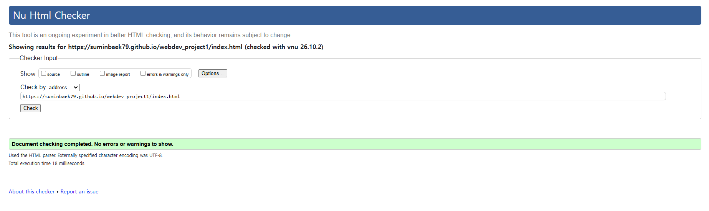

My Home Page
About Myself
Welcome to my homepage! My name is Sumin Baek, an undergraduate student majoring in Data Science at Incheon National University in South Korea.
I am an international exchange student currently attending my first semester at the Illinois Institute of Technology (IIT). This space shares my academic profile, projects, and life in Chicago.
Current goals for this semester
- Read and summarize academic papers in data science to deepen my domain knowledge.
- Participate in data science competitions and awards to challenge my technical skills.
- Improve my English communication skills in both academic and daily life.
- Experience diverse cultures and broaden my global perspective during this semester.
What you can explore on this site
- Resume Page: My academic history, coursework, technical skills, certifications, and awards.
- Life in Chicago & IIT Campus Page: My experiences at Illinois Tech, city explorations, and media gallery.
Universities
Below are the logos of my home university, Incheon National University in South Korea, and my current exchange institution, the Illinois Institute of Technology in Chicago.
Page Validation
